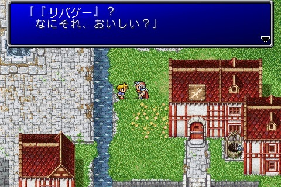
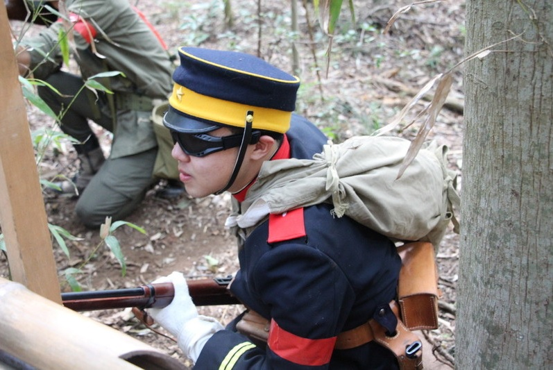
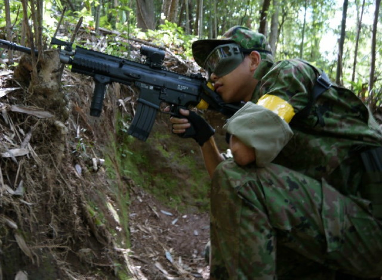
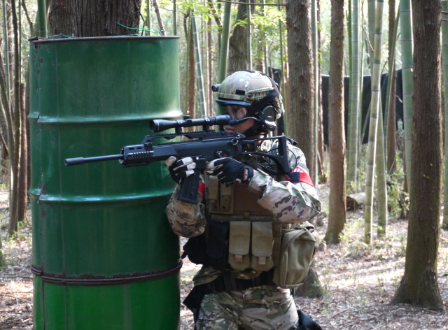
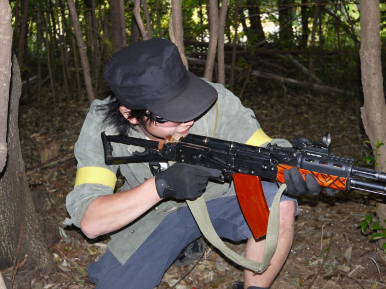

サバゲーについて
あー…まぁ拙いながらも平たく解説していこうか…
サバイバルゲームとは
直径6mm～8mmのBB弾が発射されるエアソフトガン(エアガン)を使って銃撃戦のごとく撃ちあう、平たく言ってしまえば「大人の戦争ごっこ」。
ゴルフのように専用のフィールドを使用し、必ずゴーグルを着用するなど安全性に配慮して行います。
ゲームの勝敗を楽しむ人やエアガンが好きな人、軍装が好きな人など、さまざまな人が楽しんでいます。
物騒なイメージとは裏腹に、厳格なルールではなくプレイヤーの良心によってゲームが成立する点から「紳士のゲーム」とも言われます。
遊び方
フィールドと呼ばれる専用の戦闘エリア内で敵味方の2チームに分かれ、開始の合図で戦闘を行う。
敵味方入り乱れての撃ち合いになり、障害物や地形、仲間との連携を駆使して敵を攻略する。
弾が当たったらそのプレーヤーは被弾(ヒット)した旨を自己申告(ヒットコール)し戦線離脱、セーフティエリアと呼ばれる場所で待機。
両陣にある敵の旗(フラッグ)を取り合う「フラッグ戦」がもっとも一般的。
歴史
サバイバルゲームは1970年後半に「ツヅミ弾」を撃ちだすエアガンを使った戦争ごっこから始まった。
発祥地は日本とされ、アメリカのペイントボールの影響を受けて誕生したといわれている。
当初はオモチャ然とした外見のエアガンが多かったが、1982年にマルゼンから6mmBB弾を使用する「KG-9」が発売された。
以降、サバイバルゲームは6mmBB弾を発射する現実の銃を再現した外見のエアガンや装備を用いる遊びとして定着し、全国へ広がっていった。
かつてはエアコッキングガンや外部ソースBV式ガスガンがゲーマーの供であったが、1991年に東京マルイが電動ガンを発売して以降、多くのゲーマーのメインアームとなる。
現在では日本以外にもアメリカ、中国・韓国・台湾といったアジア諸国、オーストラリアやニュージーランドなどのオセアニア諸国にも広がりを見せている。
(アメリカを中心とした海外では、BB弾を発射する銃の総称を用いて"Airsoft"などと呼称される。)
面白さ
サバイバルゲームの面白さは人によって実に様々。その面白さはスポーツに通ずるものがある。
あるときは身を潜め、またあるときは大胆に攻撃。フィールドを駆ける緊張感。
個人技を追求するのはもちろん、仲間との連携プレー、ルールや状況に応じて的確に戦況判断し行動する面白さ。
そして敵をヒットしたときの充実感、味方と力を合わせてフラッグをゲットしたときの達成感は何物にも代えがたい。
また装備やエアガンを揃え、自分好みにしていく面白さが味わえるのもサバゲーならでは。
 
 